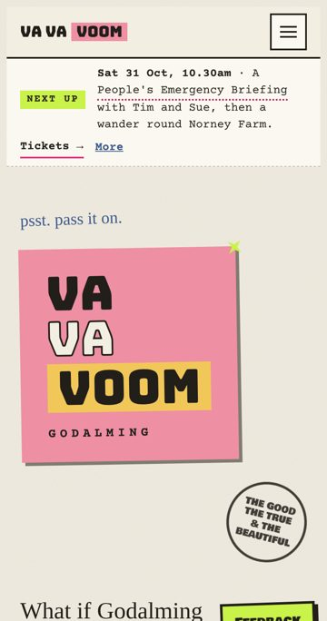
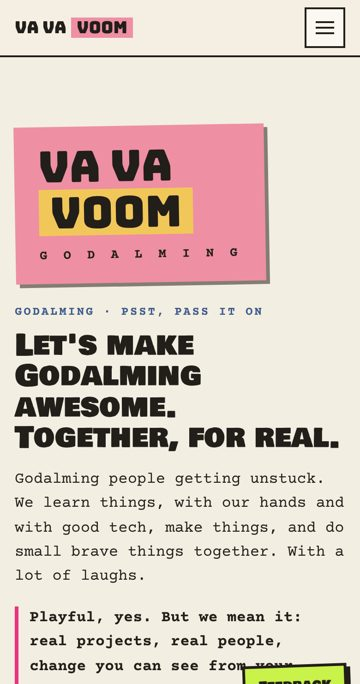
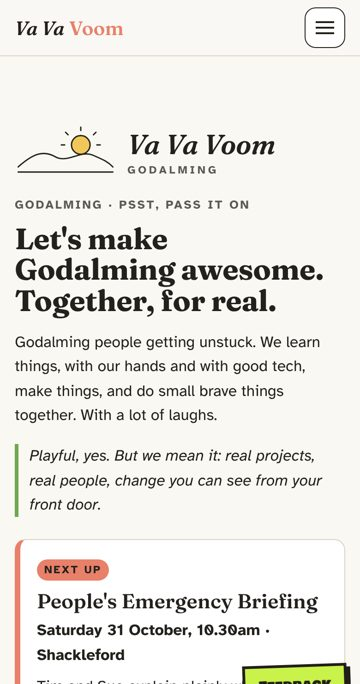
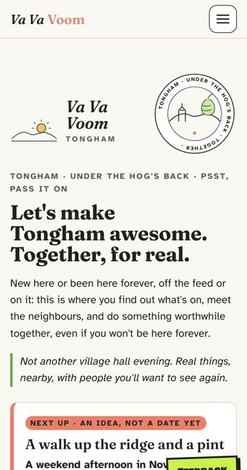
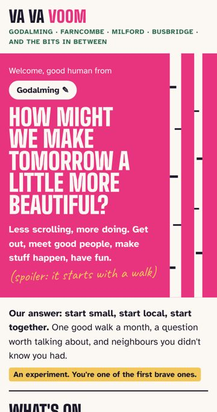

← Va Va Voom · About this experiment
How we built this
Va Va Voom was made by a few Godalming people and Claude, in spare evenings and early mornings. It's a test of what citizens can build for themselves with the tools we have today.
Started 20 October. Now on Release Godalming.
Real user tests: Carl (Better Men, 24 October), Tim and Rieks. We also test with pretend personas: a guide, not evidence. As of 31 October.
Five looks we tried
Same idea, five different coats of paint. Tap one to see it.

The originalSticker logo, punky, "psst, pass it on"
PinkSoft pink with a typewriter voice
GroundedCalm serif and a sunrise, after Carl's test
TonghamGrounded, made local with its own badge
Busbridge, now liveBold pink question, the look we went withWhat should we build next?
This is our feature backlog, opened up. Tap I'd use this on anything you'd actually use, and we'll build the most wanted first. Something missing? Tell us.
- Near me: what's closest to home comes first
- Browse by feeling, not just topic: play, connect, get inspired
- A reminder the day before, and a reply from a real person
- Log in with an email link, so your picks follow you to any phone
- See your card before it goes live when you share something
- Quick posts: "walking Saturday, who's coming?"
- Project pages with a lead and simple ways to help
- Ways to take part with less screen time
- An archive of past events, and how they went
- A sauna as a meeting place, for about ten
- Good human badges you earn by joining in
- A simple membership with credits for paid things
Votes go to our private sheet with the release you saw. No name needed.
Who's on the team
- Kev founder, with Tim and Carl
- Claude building AI
- Margot shaping AI
- James build and design AI
- Sam testing AI
- Grain style AI
- Bee curator AI
- Rowan stories AI
- the Watcher the board AI
AI = one of Kev's AI team, played by Claude. The people are real.
Where the hours went
Kev's time is measured from when he was actually in the chat, plus ten minutes a sitting. Claude does the building in between, so the making took longer than this.
| 20 October | 2.5h | 20 to 23 October, Kev's own figure: first invitation page and logos, the other versions, compass, portals, Simple2 live, What's happening, the catcher, the Watcher, the gate and feedback |
| 24 October | 0.25h | PostHog, floating header and menu, lighter Next up, Grain's style sheet, Margot, James and Sam's proposals |
| 25 October | 1.9h | Trimmed the main page, Carl's write-up, three style branches, Tongham, Share a project, contact consent, The Human Bit, login polish, two-step welcome, this build log |
| 26 October | 0.1h | Safe in the Garden: a 15-minute safeguarding micro-course for Therapy Garden volunteers, shaped for Rieks (garden/) |
| 26 October | 0.1h | Safe in the Garden: asks before recording (shared choice with the main site), lesson-by-lesson PostHog events and replay with typed fields hidden |
| 28 October | 0.1h | Release Busbridge: hello.html, the Saturday MLP (welcome and where's home, what's on with I'm in, interest list, Show me more of, who's behind it, Three words and a wand feedback), privacy page, QR codes and print sheet (qr.html) |
| 29 October | 3.4h | Releases Eashing and Farncombe: policies and processes index, join in any way, near you for Tongham, simplify review with James and Sam's panel (page from 6½ to about 4 screens), I'm in always offers details, graffiti stickers, photos on coloured backgrounds, Ilona's Power Hour, About this experiment, this page's looks and vote |
| 30 October | 4.1h | Release Godalming, day 1: the Pulse (who's visiting, counts only), secret animal names for neighbours who help, Verified commits, consent tracker, design patterns, link check, invites and consent messages, Kev's bio, a quiet link to Stories |
| 31 October | 0.9h | Release Godalming, day 2: My picks (hidden): local events from The Burrow, Trinkfluss and New House, score For me / Maybe / Not for me, learns what you like, distance and when filters, preference model write-up |
Every version of the page
- First version, punky 20 October
- Quiet, one colour 20 October
- Earthier sister 21 October
- Lifted earth, compass and portals 21 October
- Zing plus stickers 21 October
- Curious, show, invite 21 October
- Simple2 (the main page until 28 October) 21 October
- Buzzy (Rabbit Hole guide) 25 October
- Pink (soft pink guide) 25 October
- Grounded (after Carl) 25 October
- Tongham, made local 25 October
- Hello: the live page (Busbridge to Farncombe) 28 October
- Tongham on the hello look 28 October
- Mockup: a topic or an experience 29 October
Releases
Each release is named after a local place, A to Z.
- 31 October Godalming · 5h: The Pulse and secret names, consent tracking, design rules and link checks, My picks: a hidden page that learns what you like
- 29 October Farncombe · 3.4h: Simpler page, details after I'm in, stickers, About this experiment, trust fixes
- 29 October Eashing: Join in any way you like, Near you for Tongham, policies
- 28 October Coldharbour: Theme colours, learn from a neighbour, share something
- 28 October Busbridge: The new front page: welcome, what's on, I'm in, feedback, privacy, QR codes
- 26 October Abinger: First mockups: front page and rabbit hole
Every small change is on GitHub, for the curious.